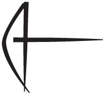
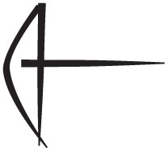
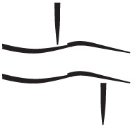
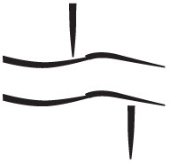
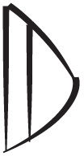
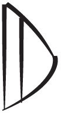
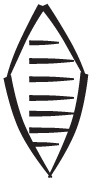
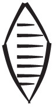
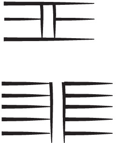
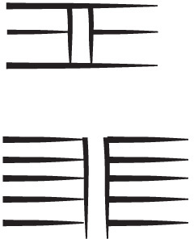

Jumps¶
Things do not only lie embedded in each other, they can also point to each other. The mechanism for that are edges. Edges are links between nodes. Like nodes, edges may carry feature values.
We learn how to deal with structure in a quantitative way.
%load_ext autoreload
%autoreload 2
import sys, os
import collections
from IPython.display import Markdown, display
from tf.app import use
A = use('uruk:clone', checkout="clone", hoist=globals())
# A = use('uruk', hoist=globals())
Data: URUK, Character table, Feature docs
Features:
Measuring depth¶
Numbered lines in the transliterations indicate a hierarchy of cases within lines. How deep can cases go? We explore the distribution of cases with respect to their depth.
We need a function that computes the depth of a case. We program that function in such a way that it also works for quads (seen before), and clusters (will see later).
The idea of this function is:
if a structure does not have sub-structures, its depth is 1 or 0;
it is 1 if the lowest level parts of the structure have a different name such as quads versus signs;
it is 0 if the lowest level parts of the structure have the same name, such as cases in lines;
the depth of a structure is 1 more than the maximum of the depths of its sub-structures.
How do we find the sub-structures of a structure?
By following edges with a sub feature, as we have seen in
quads.
def depthStructure(node, nodeType, ground):
subDepths = [
depthStructure(subNode, nodeType, ground)
for subNode in E.sub.f(node)
if F.otype.v(subNode) == nodeType
]
if len(subDepths) == 0:
return ground
else:
return max(subDepths) + 1
Example: cases¶
We call up our example tablet and do a few basic checks on cases.
Note that there is also a feature depth that provides the depth at which a case is found, which is different from the depth a case has.
pNum = 'P005381'
query = '''
tablet catalogId=P005381
'''
results = A.search(query)
A.show(results, withNodes=True, lineNumbers=True, showGraphics=False)
0.01s 1 result
result 1
line1 = T.nodeFromSection((pNum, 'obverse:1', '1'))
A.pretty(line1, showGraphics=False)
depthStructure(line1, 'case', 0)
1
That makes sense, since case 1 is divided in one level of sub-cases: 1a and 1b.
L.d(line1, otype='case')
(167736, 167737)
line2 = T.nodeFromSection((pNum, 'obverse:1', '2'))
A.pretty(line2, showGraphics=False)
depthStructure(line2, 'case', 0)
0
Indeed, case 2 does not have a division in sub-cases.
L.d(line2, otype='case')
()
Counting by depth¶
For a variety of structures we’ll find out how deep they go, and how depth is distributed in the corpus.
Cases¶
We are going to collect all cases in buckets according to their depths.
caseDepths = collections.defaultdict(list)
for n in F.otype.s('line'):
caseDepths[depthStructure(n, 'case', 0)].append(n)
for n in F.otype.s('case'):
caseDepths[depthStructure(n, 'case', 0)].append(n)
caseDepthsSorted = sorted(
caseDepths.items(),
key=lambda x: (-x[0], -len(x[1])),
)
for (depth, casesOrLines) in caseDepthsSorted:
print(f'{len(casesOrLines):>5} cases or lines with depth {depth}')
24 cases or lines with depth 4
66 cases or lines with depth 3
1024 cases or lines with depth 2
3247 cases or lines with depth 1
41132 cases or lines with depth 0
We’ll have some fun with this. We find two of the deepest cases, one on a face that is as small as possible, one on a face that is as big as possible.
So we restrict ourselves to caseDepths[4].
For all of these cases we find the face they are on, and the number of quads on that face.
deepCases = caseDepths[4]
candidates = []
for case in deepCases:
face = L.u(case, otype='face')[0]
size = len(A.getOuterQuads(face))
candidates.append((case, size))
sortedCandidates = sorted(
candidates,
key=lambda x: (x[1], x[0])
)
sortedCandidates
[(253501, 16),
(232985, 18),
(248868, 23),
(255246, 32),
(241089, 37),
(247955, 38),
(250963, 38),
(231788, 41),
(231789, 41),
(245488, 45),
(242207, 48),
(253727, 48),
(241171, 52),
(255664, 53),
(249501, 59),
(251109, 63),
(255650, 94),
(242646, 112),
(242647, 112),
(248316, 112),
(256051, 295),
(256058, 295),
(256061, 295),
(256062, 295)]
We can do better than this!
A.table(sortedCandidates)
| n | p | line | sign |
|---|---|---|---|
| 1 | P006428 obverse:2:2 | 1a4(N14) .jpg) 3(N01) 3(N01) .jpg) [...] [...] 1b1b11b1A2(N14) [...] [...] 1b1b11b1A2(N14) .jpg) 3(N01) BA 1b1B1b1B1AN 3(N01) BA 1b1B1b1B1AN  3(N57) 3(N57) .jpg) 1b1B2EN~a 1b1B2EN~a  PA~a PA~a  ERIN ERIN  1b2[...] 2(N01) 1b2[...] 2(N01) .jpg) GI [...] GI [...] | X |
| 2 | P006428 obverse:3:1 | 1a1a11a1A1a1A1[...] 5(N01) [...] UDU~a  1a1A2[...] 7(N01) MASZ2 1a1B4(N14) 1(N01) 1a1A2[...] 7(N01) MASZ2 1a1B4(N14) 1(N01) .jpg) DUR~b 1a21a2A[...] [...] 1a2B2(N14) 3(N01) UDU~a GI 1b|LAL2~axNIM~b2| [...] DUR~b 1a21a2A[...] [...] 1a2B2(N14) 3(N01) UDU~a GI 1b|LAL2~axNIM~b2| [...] | X |
| 3 | P006428 obverse:3:3 | 2a2a15(N01) SU~a PAP~a  2a2UNUG~a 2a2UNUG~a  RAD~a 2b2b12b1A2b1A11(N01) SZUR2~a KU3~a RAD~a 2b2b12b1A2b1A11(N01) SZUR2~a KU3~a  E2~a E2~a  2b1A2[1(N01)] [...] 2b1BUR~a 2b23(N01) TUR BAR 2b1A2[1(N01)] [...] 2b1BUR~a 2b23(N01) TUR BAR | SUHUR  |
| 4 | P006428 obverse:3:7 | 3a5(N01) [...] SZA3~a1 TUR 3b3b13b1A[...] [SAL] 3b1B3b1B1[...] 3b23b2A5(N01) KUR~a 3b2B3b2B1X [...] 3b2B2X [...] | X |
| 5 | P006428 obverse:5:1 | 1a[...] 5(N14) 6(N01) .jpg) GAR 1b1b1[...] X [...] 1b21(N34) GAR 1b1b1[...] X [...] 1b21(N34) .jpg) 4(N14) 8(N01) SZE~a 4(N14) 8(N01) SZE~a  GAR 1c1c11c1a[...] 1(N14) GAR 1c1c11c1a[...] 1(N14) .jpg) [...] 1c1b[...] 1(N34) [...] 1(N14) GUG2~a 1c21c2a4(N14) 4(N01) [...] 1c1b[...] 1(N34) [...] 1(N14) GUG2~a 1c21c2a4(N14) 4(N01) .jpg) [...] TUR |U4.2(N08)| 1c2b1c2b11(N01) [...] 1c2b21(N14) 7(N01) TUR 1c2b32(N14) 6(N01) SUR [...] TUR |U4.2(N08)| 1c2b1c2b11(N01) [...] 1c2b21(N14) 7(N01) TUR 1c2b32(N14) 6(N01) SUR | ... |
| 6 | P448701 | 2a6(N01) EN~a 2b2b12b1A2(N01) NUN~a  ZATU687 ZATU687  EN~a EN~a TUR 2b1B2b1B1(EN~a# PAP~a#)a 2b1B2(3(N57) GAN2)a 2b22b2A4(N01) EN~a X KI ZATU687 AN 2b2B2b2B1(EN~a |SZU2.E2~b|)a 2b2B2(BU~a SZU)a 2b2B3(SAL BU~a)a 2b2B4(EN~a HI KASZ~c)a EN~a EN~a TUR 2b1B2b1B1(EN~a# PAP~a#)a 2b1B2(3(N57) GAN2)a 2b22b2A4(N01) EN~a X KI ZATU687 AN 2b2B2b2B1(EN~a |SZU2.E2~b|)a 2b2B2(BU~a SZU)a 2b2B3(SAL BU~a)a 2b2B4(EN~a HI KASZ~c)a | |
| 7 | P448701 | 1a1a11a1A4(N01) SZE~a 1a1B1a1B11(N01) UD5~a 1a1B23(N01) MASZ2 1a24(N34) 4(N14) 2(N01) DUB~a BA UDU~a 1b1b12(N34) 2(N14) 4(N01) DARA4~c2 1b21(N34) 5(N14) 6(N01) MASZ2 UD5~a 1b32(N14) 2(N01) SZE3  UDU~a 1c1(N34) 2(N14) 1(N01) |U4x1(N57)| BAR UDU~a 1c1(N34) 2(N14) 1(N01) |U4x1(N57)| BAR | |
| 8 | P448701 obverse:1:1 | 1a5(N01) SAL  1b1b11b1A4(N01) SAL 1b1B1b1B1(NAB DI |BU~a+DU6~a|)a 1b1B2(ZI~a#? AN)a 1b1B3(ANSZE~e 7(N57) DUR2 DU)a 1b1B4(LAL3~a#? GAR IG~b)a 1b21b2A1(N01) SZA3~a1 TUR 1b2B(TU~b)a 1b1b11b1A4(N01) SAL 1b1B1b1B1(NAB DI |BU~a+DU6~a|)a 1b1B2(ZI~a#? AN)a 1b1B3(ANSZE~e 7(N57) DUR2 DU)a 1b1B4(LAL3~a#? GAR IG~b)a 1b21b2A1(N01) SZA3~a1 TUR 1b2B(TU~b)a | 4(N41) |
| 9 | P448701 obverse:1:1 | 2a3(N01) KUR~a 2b2b12b1A1(N01) KUR~a 2b1B(NA~a NIR~a)a 2b22b2A2(N01) SZA3~a1 TUR 2b2B2b2B1(GI6 KISZIK~a# URI3~a)a 2b2B2([...])a | 4(N41) |
| 10 | P448701 obverse:1:2 | 3a2(N34) 4(N14) [...] X [...] 3b3b13b1A[...] ZAG~a X SUHUR [...] 3b1B3b1B12(N34) 2(N14) 4(N01) SUHUR [...] 3b1B22(N14) 4(N01) SUHUR [...] 3b1B34(N01) SUHUR [...] 3b1B4[...] 3b21(N14) |HI.SUHUR| [...] | X |
| 11 | P448701 obverse:2:1 | 1a5(N01) SUM~a GA2~a1 PAP~a E2~b  EN~a ISZ~a 1b1b13(N01) GA2~a1 GAL~a EN~a ISZ~a 1b1b13(N01) GA2~a1 GAL~a  1b21b2a1b2a11(N01) GAL~a 1b2a21(N01) GA2~a1 TUR 1b2b1b2b11(N01) |U4x3(N57)| 1b2b21(N01) X 1cPIRIG~b1 1b21b2a1b2a11(N01) GAL~a 1b2a21(N01) GA2~a1 TUR 1b2b1b2b11(N01) |U4x3(N57)| 1b2b21(N01) X 1cPIRIG~b1  ISZ~a ISZ~a | X |
| 12 | P448701 obverse:2:1 | 1a1a17(N20) 5(N05) 1(N42~a) 1(N25) 1a29(N18) 2(N03) 2(N40) 1(N24~a) 1b1b11b1A2(N14) 1(N01) SZEN~b GAL~a 1b1B1b1B11(N20) 1(N42~a) 1(N25) 1b1B21(N18) 1(N40) 1(N24~a) 1b21b2A2(N34) 4(N14) SZEN~b TUR 1b2B1b2B13(N20) 1(N05) 1(N42~a) 1b2B23(N18) 1(N03) 1(N40) 1b31b3A6(N34) 1(N14) 8(N01) SZEN~c@t 1b3B1b3B13(N20) 1(N05) 2(N42~a) .jpg) 1b3B24(N18) 5(N03) 2(N40) 1b41b4A1(N14) DUG~a 1b4B1b4B12(N05) 2(N42~a) 1(N57) 1b3B24(N18) 5(N03) 2(N40) 1b41b4A1(N14) DUG~a 1b4B1b4B12(N05) 2(N42~a) 1(N57) .jpg) SZE~a 1b4B21(N03) 3(N40) SZE~a 1b4B21(N03) 3(N40) | X |
| 13 | P448701 | 1a1(N01) 1(N30~a) 1(N24) .jpg) SZE~a 1b1b12(N39~a) SZE~a 1b1b12(N39~a) .jpg) HI@g~a HI@g~a  1b23(N39~a) 1(N24) 1(N30~a) SZE~a 1c1c11c1a5(N01) GAR GAL~a 1c1b1(N42~a) HI@g~a 1c21(N27) NE~a ZATU714 GUG2~a 1c31(N29~a) |ZATU714xHI@g~a| MU 1c41c4a2(N01) U4 1b23(N39~a) 1(N24) 1(N30~a) SZE~a 1c1c11c1a5(N01) GAR GAL~a 1c1b1(N42~a) HI@g~a 1c21(N27) NE~a ZATU714 GUG2~a 1c31(N29~a) |ZATU714xHI@g~a| MU 1c41c4a2(N01) U4  GAR 1c4b1(N27) 1c51c5a1c5a18(N01) GAR U2~a 1c5a2|SZU2.E2~b| 1c61c6a8(N01) DU8~c 1c6b1(N27) 1c71c7a1(N14) 5(N01) SZE~a GAR 1c7b1(N42~a) 1(N25) GAR 1c4b1(N27) 1c51c5a1c5a18(N01) GAR U2~a 1c5a2|SZU2.E2~b| 1c61c6a8(N01) DU8~c 1c6b1(N27) 1c71c7a1(N14) 5(N01) SZE~a GAR 1c7b1(N42~a) 1(N25) | |
| 14 | P448701 | 1a5(N01) GA~a  DUB~a 1b1b11b1A1b1A11(N01) BA AB~a DUB~a 1b1b11b1A1b1A11(N01) BA AB~a  AN MUSZ3~a AN MUSZ3~a  1b1A21(N01) SAL BA PIRIG~b1 1b1BZATU751~a DUR2 1b1A21(N01) SAL BA PIRIG~b1 1b1BZATU751~a DUR2  3(N57) BU~a 3(N57) BU~a  1b23(N01) BA [...] 1b23(N01) BA [...] | |
| 15 | P448702 obverse:1:2 | 2a3(N01) LAL2~a  NE~a 1(N57) 3(N57) 2b2b12b1A1(N01) UD5~a 2b1BPAP~a 2b1CLAL2~a NE~a 2b22b2A2(N01) APIN~a NE~a 1(N57) 3(N57) 2b2b12b1A1(N01) UD5~a 2b1BPAP~a 2b1CLAL2~a NE~a 2b22b2A2(N01) APIN~a  3(N57) GIR3@g~c A 3(N57) GIR3@g~c A  BU~a PAP~a NAM2 BU~a PAP~a NAM2  2b2B2b2B1ZATU836 BU~a SZE~a 2b2B2U8 LAGAB~a 2b2CSZIM~a 2b2B2b2B1ZATU836 BU~a SZE~a 2b2B2U8 LAGAB~a 2b2CSZIM~a  | N |
| 16 | P448702 obverse:1:2 | 2a1(N14) 8(N01) BA KI 2b2b12b1A1(N14) 3(N01) DA~a  PA~a |DU8~cxUDU~a| 2b1B2b1B12(N01) U8 [...] 2b1B21(N01) [...] 2b1B34(N01) UDUNITA~a [...] 2b1B46(N01) MASZ2 2b22b2A5(N01) GURUSZDA 2b2B2b2B12(N01) U8 [...] 2b2B21(N01) SZE3 UDUNITA~a 2b2B32(N01) X [...] PA~a |DU8~cxUDU~a| 2b1B2b1B12(N01) U8 [...] 2b1B21(N01) [...] 2b1B34(N01) UDUNITA~a [...] 2b1B46(N01) MASZ2 2b22b2A5(N01) GURUSZDA 2b2B2b2B12(N01) U8 [...] 2b2B21(N01) SZE3 UDUNITA~a 2b2B32(N01) X [...] | NUN~a |
| 17 | P448703 obverse:1:3 | 3a1(N01) AB~a AB2 3b3b13b1A3b1A11(N01) DUG~c 3b1A21(N01) [...] 3b1BNAB DI |E2~ax1(N57)@t| BAPPIR~a GIBIL  3b21(N01) ZATU732 GI6 KAR2~a NUN~a 3b33b3A3(N01) |SILA3~axGARA2~a| 3b3B3b3B12(N57) 3b21(N01) ZATU732 GI6 KAR2~a NUN~a 3b33b3A3(N01) |SILA3~axGARA2~a| 3b3B3b3B12(N57) .jpg) SZA SZA  |U4x2(N01)| SZU |U4x2(N01)| SZU  3b3B21(N57) |GIxSZE3| BAD 3b3B21(N57) |GIxSZE3| BAD | 1(N08) |
| 18 | P471695 obverse:1:1 | 1a3(N14) .jpg) 7(N01) UR5~a 7(N01) UR5~a  SAL 1b1b11b1a2(N14) GI6 AMA~a 1b1b1b1b01NIN SAL 1b1b11b1a2(N14) GI6 AMA~a 1b1b1b1b01NIN  NAB DI 1b1b02SAL 1(N02) PAP~a 1b1b03BU~a U4 SI4~a 1b1b04EN~a U4 1b1b05[...] X 1b1b06NAR NAB DI 1b1b02SAL 1(N02) PAP~a 1b1b03BU~a U4 SI4~a 1b1b04EN~a U4 1b1b05[...] X 1b1b06NAR  1b1b07EN~a U4 1b1b08ZATU628~a 1b1b07EN~a U4 1b1b08ZATU628~a  KI 1b1b09[...] 1b1b10[...] 1b1b11SAL SAL 1b1b12SZEG9 1b1b13[...] 1b1b14[...] 1b1b15[...] 1b1b16X GI4~a KI 1b1b09[...] 1b1b10[...] 1b1b11SAL SAL 1b1b12SZEG9 1b1b13[...] 1b1b14[...] 1b1b15[...] 1b1b16X GI4~a  1b1b17[...] 1b1b18[...] 1b1b19[...] 1b1b20[...] 1b21b2a1(N14) 7(N01) X 1b2b1b2b01[...] 1b2b02EN~a [...] 1b2b03[...] 1b2b04[...] 1b2b05NAGA~a 1b2b06[...] ZATU694~c 1b2b07[...] 1b2b08AN NIN DUB~a 1b2b09NAGA~a HI 1b1b17[...] 1b1b18[...] 1b1b19[...] 1b1b20[...] 1b21b2a1(N14) 7(N01) X 1b2b1b2b01[...] 1b2b02EN~a [...] 1b2b03[...] 1b2b04[...] 1b2b05NAGA~a 1b2b06[...] ZATU694~c 1b2b07[...] 1b2b08AN NIN DUB~a 1b2b09NAGA~a HI  1b2b10[...] 1b2b11[...] 1b2b12X NUN~a [...] 1b2b13HI@g~a [...] 1b2b14[...] 1b2b15[...] 1b2b16[...] 1b2b17[...] 1b2b10[...] 1b2b11[...] 1b2b12X NUN~a [...] 1b2b13HI@g~a [...] 1b2b14[...] 1b2b15[...] 1b2b16[...] 1b2b17[...] | EN~a |
| 19 | P471695 obverse:1:1 | 2a3(N01) SAL TUR 2b2b12b1a2(N01) [...] 2b1b2b1b1AMA~a GI6 2b1b2X [...] 2b22b2a1(N01) X 2b2b2b2b1MA AN AMA~a | EN~a |
| 20 | P471695 obverse:1:1 | 3a6(N01) EN~a IB~a 3b3b11(N01) SU~a PAP~a 3b23b2A5(N01) KUR~a 3b2B3b2B12(N01) EN~a SZE3 KUR~a 3b2B23(N01) DUB~a KUR~a | EN~a |
| 21 | P000014 obverse:1:2 | 2a1(N01) DUG~c 2b2b12b1A[...] |DUG~cx1(N57)| 2b1B2b1B1[...] GAN~c SZU 2b1B2SZITA~a1 ADAB UTUL~a 2b22b2A2(N01) SILA3~a GARA2~a 2b2B2b2B11(N57) SZA SZU 2b2B21(N57) ZATU659 PAP~a SUKKAL  2b34(N01) |SILA3~axGA~a| 2b34(N01) |SILA3~axGA~a|  SZA 2cSUG5 LA2 IB~a SZA 2cSUG5 LA2 IB~a | 1(N01) |
| 22 | P000014 obverse:1:2 | 2a2a13(N01) E2~a PA~a 3(N57) |(UDU~axTAR)~a| KU6~a  2a22a2A2a2A11(N01) E2~a ALAN~b NUN~a TAK4~a 2a2A21(N01) ZATU651@g TAK4~a ALAN~b 2a2BX KA~a X HI X 2a31(N01) SANGA~a 2a22a2A2a2A11(N01) E2~a ALAN~b NUN~a TAK4~a 2a2A21(N01) ZATU651@g TAK4~a ALAN~b 2a2BX KA~a X HI X 2a31(N01) SANGA~a  GA~a AB~a 2a41(N01) GAL~a ZATU687 AB~a 2a51(N01) GA~a ARARMA2~a 2bGESZTU~b SZITA~a1 ZATU686~a GA~a AB~a 2a41(N01) GAL~a ZATU687 AB~a 2a51(N01) GA~a ARARMA2~a 2bGESZTU~b SZITA~a1 ZATU686~a | 1(N01) |
| 23 | P000014 obverse:1:2 | 1a[...] [...] DUG~c UNUG~a 1b1b11b1A[...] |SILA3~axGARA2~a| 1b1B1b1B1[...] [...] X 1b1B21(N57) DILMUN 1b21b2A4(N01) |SILA3~axGA~a| 1b2B1b2B11(N57) EN~a SZE3 TUR NUN~a 1b2B21(N57) X AN MUSZ3~a EN~a X 1b2B31(N57) SIG2~b 1b2B41(N57) E2~a GU 1b32(N01) BA SILA3~a KASZ~b  | 1(N01) |
| 24 | P000014 obverse:1:2 | 2a1(N01) KU6~a 2b2b12b1A6(N01) |SILA3~axGARA2~a| 2b1B2b1B11(N57) EN~a SAG  2b1B21(N57) HI E2~a DILMUN NUN~a 2b1B31(N57) NAMESZDA 2b1B41(N57) GESZTU~a DIM~a 2b1B51(N57) SZA SZU 2b1B61(N57) GI BAD 2b21(N01) |SILA3~axGA~a| |SIxSZE3| EN~a NUN~a 2b35(N14) BA SILA3~a KASZ~b 2b1B21(N57) HI E2~a DILMUN NUN~a 2b1B31(N57) NAMESZDA 2b1B41(N57) GESZTU~a DIM~a 2b1B51(N57) SZA SZU 2b1B61(N57) GI BAD 2b21(N01) |SILA3~axGA~a| |SIxSZE3| EN~a NUN~a 2b35(N14) BA SILA3~a KASZ~b | 1(N01) |
We can also assemble relevant information for this table by hand and put it in a markdown table.
markdown = '''
case type | case number | tablet | face | size
------ | ---- | ---- | ---- | ----
'''.strip()
markdown += '\n'
bigCase = sortedCandidates[-1][0]
smallCase = sortedCandidates[0][0]
for (case, size) in sortedCandidates:
caseType = F.otype.v(case)
caseNum = F.number.v(case)
face = L.u(case, otype='face')[0]
tablet = L.u(case, otype='tablet')[0]
markdown += f'''
{caseType} | {caseNum} | {A.cdli(tablet, asString=True)} | {F.type.v(face)} | {size}
'''.strip()
markdown += '\n'
Markdown(markdown)
case type | case number | tablet | face | size ------ | ---- | ---- | ---- | ---- line | 1 | P005294 | obverse | 16 line | 1 | P218054 | reverse | 18 line | 2 | P006092 | obverse | 23 line | 3 | P002694 | reverse | 32 line | 1 | P325754 | reverse | 37 line | 2 | P006036 | obverse | 38 line | 1 | P006295 | reverse | 38 line | 1 | P004735 | obverse | 41 line | 2 | P004735 | obverse | 41 line | 3 | P002856 | obverse | 45 line | 1 | P411608 | obverse | 48 line | 1 | P005322 | reverse | 48 line | 1 | P325234 | reverse | 52 line | 1 | P003531 | obverse | 53 line | 2 | P006160 | obverse | 59 line | 2 | P006307 | reverse | 63 line | 3 | P003529 | obverse | 94 line | 1 | P387752 | obverse | 112 line | 2 | P387752 | obverse | 112 line | 3 | P006056 | reverse | 112 line | 2 | P003808 | obverse | 295 line | 2 | P003808 | obverse | 295 line | 1 | P003808 | obverse | 295 line | 2 | P003808 | obverse | 295
Not surprisingly: the deepest cases are all lines. Because every case is enclosed by a line, which is one deeper than that case.
You can click on the P-numbers to view these tablets on CDLI.
We finally show the source lines that contain these deep cases.
A.pretty(smallCase)
A.pretty(bigCase)
With a bit of coding we can get another display:
(smallPnum, smallColumn, smallCaseNum) = A.caseFromNode(smallCase)
(bigPnum, bigColumn, bigCaseNum) = A.caseFromNode(bigCase)
smallLineStr = '\n'.join(A.getSource(smallCase))
bigLineStr = '\n'.join(A.getSource(bigCase))
display(Markdown(f'''
**{smallPnum} {smallColumn} line {smallCaseNum}**
```
{smallLineStr}
```
'''))
A.lineart(smallPnum, width=200)
display(Markdown(f'''
---
**{bigPnum} {bigColumn} line {bigCaseNum}**
```
{bigLineStr}
```
'''))
A.photo(bigPnum, width=400)
P005294 obverse:1 line 1
@obverse
@column 1
1.a. 4(N14)# 3(N01) [...] , [...]
1.b1A. 2(N14) 3(N01) , BA
1.b1B1. , AN 3(N57)
1.b1B2. , EN~a PA~a ERIN
1.b2. [...] 2(N01)# , GI# [...]
P003808 obverse:6 line 2
2.a. 1(N01) , KU6~a
2.b1A. 6(N01) , |SILA3~axGARA2~a|
2.b1B1. 1(N57) , EN~a# SAG#
2.b1B2. 1(N57) , HI E2~a DILMUN NUN~a
2.b1B3. 1(N57) , NAMESZDA
2.b1B4. 1(N57) , GESZTU~a? DIM~a
2.b1B5. 1(N57) , SZA SZU
2.b1B6. 1(N57) , GI BAD
2.b2. 1(N01) , |SILA3~axGA~a| |SIxSZE3| EN~a# NUN~a#
2.b3. 5(N14) , BA SILA3~a KASZ~b
Quads¶
We just want to see how deep quads can get.
quadDepths = collections.defaultdict(list)
for quad in F.otype.s('quad'):
quadDepths[depthStructure(quad, 'quad', 1)].append(quad)
quadDepthsSorted = sorted(
quadDepths.items(),
key=lambda x: (-x[0], -len(x[1])),
)
for (depth, quads) in quadDepthsSorted:
print(f'{len(quads):>5} quads with depth {depth}')
1 quads with depth 3
167 quads with depth 2
3626 quads with depth 1
Lo and behold! There is just one quad of depth 3 and it is on our leading example tablet.
We have studied it already in quads.
bigQuad = quadDepths[3][0]
tablet = L.u(bigQuad, otype='tablet')[0]
A.lineart(bigQuad)
A.cdli(tablet)
Clusters¶
Clusters are groups of consecutive quads between brackets.
Clusters can be nested.
As with quads, we find the members of a cluster by following sub edges.
Depths in clusters¶
We use familiar logic to get a hang of cluster depths.
clusterDepths = collections.defaultdict(list)
for cl in F.otype.s('cluster'):
clusterDepths[depthStructure(cl, 'cluster', 1)].append(cl)
clusterDepthsSorted = sorted(
clusterDepths.items(),
key=lambda x: (-x[0], -len(x[1])),
)
for (depth, cls) in clusterDepthsSorted:
print(f'{len(cls):>5} clusters with depth {depth}')
106 clusters with depth 2
32647 clusters with depth 1
Not much going on here. Let’s pick a nested cluster.
nestedCluster = clusterDepths[2][0]
tablet = L.u(nestedCluster, otype='tablet')[0]
quads = A.getOuterQuads(nestedCluster)
print(A.atfFromCluster(nestedCluster))
A.pretty(nestedCluster, withNodes=True)
A.lineart(quads[0], height=150)
A.cdli(tablet)
(IDIGNA [...] ...)a

Kinds of clusters¶
In our corpus we encounter several types of brackets:
( )afor proper names[ ]for uncertainty< >for supplied material.
The next thing is to get on overview of the distribution of these kinds.
clusterTypeDistribution = collections.Counter()
for cluster in F.otype.s('cluster'):
typ = F.type.v(cluster)
clusterTypeDistribution[typ] += 1
for (typ, amount) in sorted(
clusterTypeDistribution.items(),
key=lambda x: (-x[1], x[0]),
):
print(f'{amount:>5} x a {typ:>8}-cluster')
32116 x a uncertain-cluster
636 x a properName-cluster
1 x a supplied-cluster
The conversion to TF has transformed [...] to a cluster of one sign with grapheme ….
These are trivial clusters and we want to exclude them from further analysis, so we redo the counting.
First we make a sequence of all non-trivial clusters:
realClusters = [
c
for c in F.otype.s('cluster')
if (
F.type.v(c) != 'uncertain' or
len(E.oslots.s(c)) > 1 or
F.grapheme.v(E.oslots.s(c)[0]) != '…'
)
]
len(realClusters)
3384
Now we redo the same analysis, but we start with the filtered cluster sequence.
clusterTypeDistribution = collections.Counter()
for cluster in realClusters:
typ = F.type.v(cluster)
clusterTypeDistribution[typ] += 1
for (typ, amount) in sorted(
clusterTypeDistribution.items(),
key=lambda x: (-x[1], x[0]),
):
print(f'{amount:>5} x a {typ:>8}-cluster')
2747 x a uncertain-cluster
636 x a properName-cluster
1 x a supplied-cluster
Lengths of clusters¶
How long are clusters in general? There are two possible ways to measure the length of a cluster:
the amount of signs it occupies;
the amount of top-level members it has (quads or signs)
By now, the pattern to answer questions like this is becoming familiar.
We express the logic in a function, that takes the way of measuring as a parameter. In that way, we can easily provide a cluster-length distribution based on measurements in signs and in quads.
def computeDistribution(nodes, measure):
distribution = collections.Counter()
for node in nodes:
m = measure(node)
distribution[m] += 1
for (m, amount) in sorted(
distribution.items(),
key=lambda x: (-x[1], x[0]),
):
print(f'{amount:>5} x a measure of {m:>8}')
def lengthInSigns(node):
return len(L.d(node, otype='sign'))
def lengthInMembers(node):
return len(E.sub.f(node))
Now we can show the length distributions of clusters by just calling computeDistribution():
computeDistribution(realClusters, lengthInSigns)
2691 x a measure of 1
433 x a measure of 2
205 x a measure of 3
41 x a measure of 4
9 x a measure of 5
3 x a measure of 6
2 x a measure of 7
computeDistribution(realClusters, lengthInMembers)
2678 x a measure of 1
452 x a measure of 2
194 x a measure of 3
44 x a measure of 4
11 x a measure of 5
4 x a measure of 6
1 x a measure of 7
Of course, we want to see the longest cluster.
longestCluster = [c for c in F.otype.s('cluster') if lengthInMembers(c) == 7][0]
A.pretty(longestCluster)


Lengths of quads¶
If you look closely at the code for these functions, there is nothing in it that is specific for clusters.
The measures are in terms of the totally generic oslots function, and the fairly generic
sub edges, which are also defined for quads.
So, in one go, we can obtain a length distribution of quads.
Note that quads can also be sub-quads.
computeDistribution(F.otype.s('quad'), lengthInSigns)
3611 x a measure of 2
175 x a measure of 3
7 x a measure of 4
1 x a measure of 5
computeDistribution(F.otype.s('quad'), lengthInMembers)
3778 x a measure of 2
16 x a measure of 3
longestQuad = [q for q in F.otype.s('quad') if lengthInSigns(q) == 5][0]
A.pretty(longestQuad)
)+(HI+1(N57)))|.jpg)